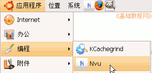

Nvu 操作基础教程
作者：Teliute 来源：基础教程网
一、新建站点 返回目录 下一课网页的内容除了文字以外，还有图片、音乐、动画等，它们共同构成了一个网站，下面我们来看一个练习；
1、启动Nvu
1）点左上角菜单“ 应用程序－编程－Nvu”，就可以启动Nvu程序；

2）第一次启动时会出来两个小面板，点关闭即可，然后进入程序窗口中；
2、选项设置
1）点菜单“工具－个人偏好设置”，出来一个设置面板，
在中间选择“保留原来的缩排”，下面的使用CSS可以根据自己的习惯，如果你习惯于HTML标签可以去掉勾；
然后在左面选择“新页设置”，然后在右边输入作者，在下面选择语言为中文zh-cn、方向为从左到右和编码为UTF-8；
2）点“确定”按钮，以后新建的页面就会自动设置好这些；
3、新建站点1）先在自己的文件夹中，新建一个qqc的文件夹，注意用英文字母；
2）然后在Nvu窗口的左边栏中点击“编辑网站”按钮，出来一个发布设置对话框；
3）在右边上面输入网站名称“青青草”，这儿是网站的标题，再在下面“发布网站”的右边点“选取目录”按钮，
找到刚才建的qqc文件夹，单击选中，然后点下面的“选择”按钮；
4）网站信息那儿可以空着，检查一下然后点“确定”按钮；
5）回到Nvu窗口中，左边的网站栏里就有了一个网站，“编辑网站”旁边的按钮分别是“刷新、新建、重命名、删除”，

网站刚建好，里面还没有网页，后面我们会慢慢添加进去；
本节学习了在Nvu中创建本地站点的基本方法，如果你成功地完成了练习，请继续学习下一课内容；
本教程由86团学校TeliuTe制作|著作权所有
基础教程网：http://teliute.org/
美丽的校园……
转载和引用本站内容，请保留版权信息和本站链接。